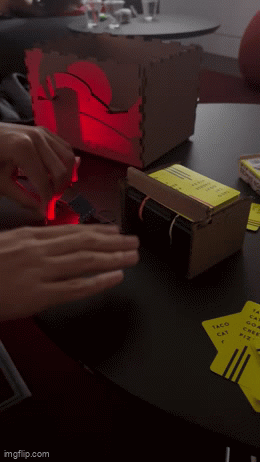
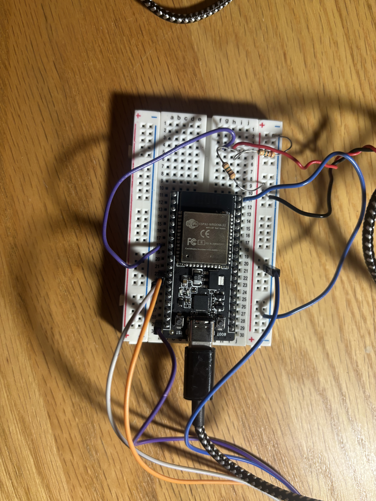

<div class="textcontainer">
<p class="margin"> </p>
<h3>Week 6: Electronic Inputs</h3>
<h2><b><u><i>Assignment 1: Piezo Sensor</h2></u></b></i>
<h4> For my first assignment, I utilized a piezo sensor to detect my hand when I knock or slap the table. Everytime I did, 2-3 cards would come out of the machine. The piezo would detect the vibration of it. </h4>
<p class="margin"> </p>
<p></p>
<p class="margin"> </p>
<h4> I encountered multiple problems when trying to code and calibrate the sensor, and almost gave up at one point. No matter what, the piezo could only detect when I physically touched it, not when I touched the table. However, once I set the max value of the piezo detector to 200, it was able to sense the low vibrations from hitting the table. For the circutry, I used the one provided on the website. <h4>
<p class="margin"> </p>
<p></p>
<h6><b> I used a wire from the piezo to a digtial pin and ground, and used 2 1 megaomn resistors.</b><h6>
<p class="margin"> </p>
<h4> For the code, I used a simple if statement. If the piezo read above a value of 200-300, the DC motor would run for a few milliseconds, and stop. Next time, I want to try coding out the delay function but I ran out of time. <h4>
<pre><code class="language-arduino">// Pin where piezo is connected
int piezoPin = 33;
const int A1A = 14; // define pin 12 for A-1A (speed)
const int A1B = 12; // change to your analog pin
void setup() {
Serial.begin(115200);
pinMode(piezoPin, INPUT);
pinMode(A1A, OUTPUT); // specify these pins as outputs
pinMode(A1B, OUTPUT);
digitalWrite(A1A, LOW); // start with the motors off
digitalWrite(A1B, LOW);
}
void loop() {
int piezoValue = analogRead(piezoPin);
Serial.println(0);
Serial.print(" ");
Serial.print(piezoValue);
Serial.print(" ");
Serial.println(4096);
delay(2); // adjust the delay as needed
if (piezoValue > 200){
digitalWrite(A1A, HIGH);
digitalWrite(A1B, LOW);
delay (800);
}
else if (piezoValue == 0){
digitalWrite(A1A, LOW);
digitalWrite(A1B, LOW);
}
}
</pre></code>
</div>
<h4>Assignment 2: [Use + Calibrate Another Sensor]</h4>
</div>